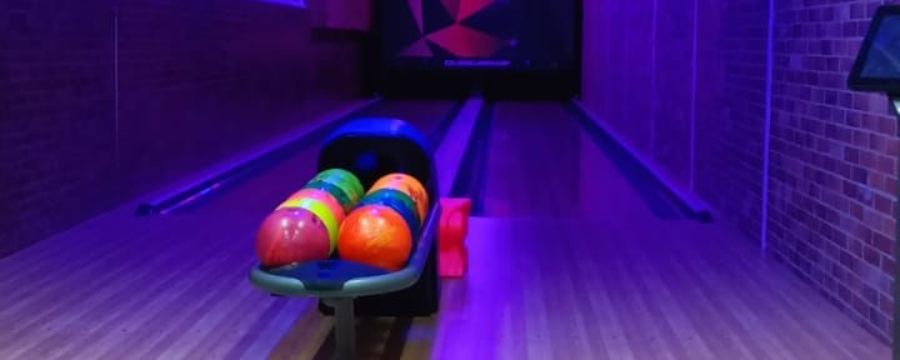

El bowling, bolo americano, bolos o boliche es un deporte de salón que consiste en derribar un conjunto de piezas de madera (llamados bolos, pinos o palitroques) mediante el lanzamiento de una pesada bola contra ellas. La pista tiene unas dimensiones de 19,20 metros de largo por 1,06 m de ancho y una zona de aproximación como mínimo de 4,60 metros. La confección de la misma antes se realizaba con listones de madera de pino americano con un ancho de 39 listones de 27,17 milímetros. Hoy en día se utilizan pistas sintéticas, simulando las líneas de los listones que sirven de referencia a los jugadores en sus lanzamientos. La bola es esférica y dispone de tres agujeros de forma que pueda ser tomada con poca fuerza. El peso de esta bola suele estar entre las 9 y las 16 libras (aproximadamente entre 4,08 y 7,25 kilogramos) y su diámetro es de 218,3 milímetros.
Uno de los mejores juegos para entretenerte y ver que habilidades tienes con buenas instalaciones y en el mejor lugar con un horario muy flexible.

Tenis de mesa (también conocido como ping-pong o pimpón) es un deporte de raqueta que se disputa entre dos jugadores o dos parejas (dobles). Es un deporte olímpico desde Seúl 1988, y el deporte con mayor número de practicantes, con 40 millones de jugadores compitiendo en todo el mundo.123 Según un estudio realizado por la NASA, es el deporte más complicado que un ser humano puede practicar a nivel profesional.456 Diversos estudios han demostrado que la práctica de este deporte mejora, entre otras, la capacidad y el tiempo de reacción, la coordinación ojo-mano, la concentración y la memoria.
Puedes jugar acompañado y ver como esta tu habilidad de concentración y memoria, donde te diviertes demasiado.